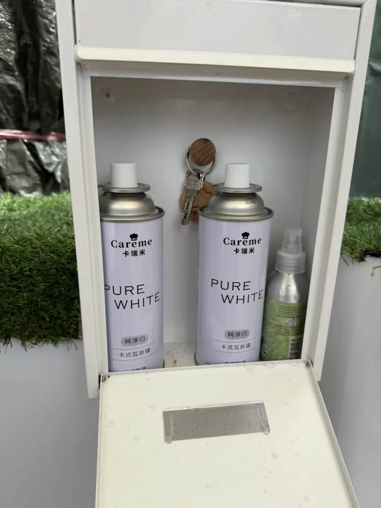
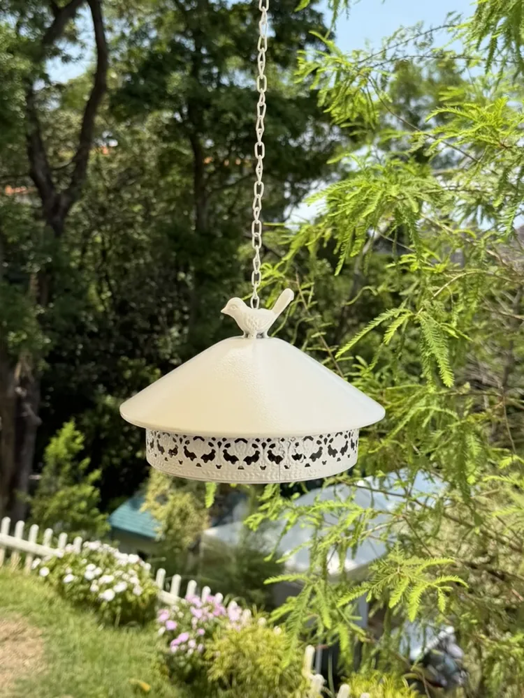
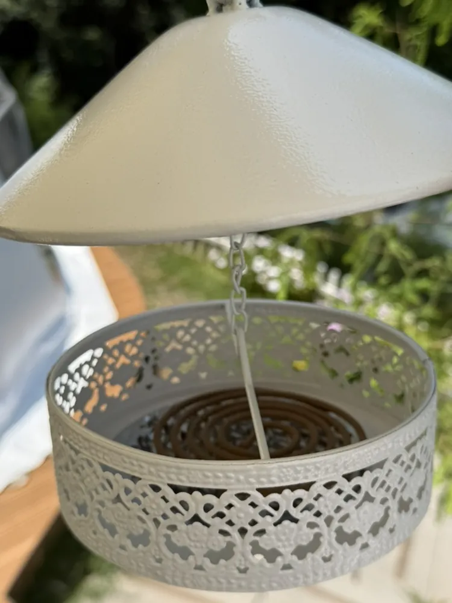
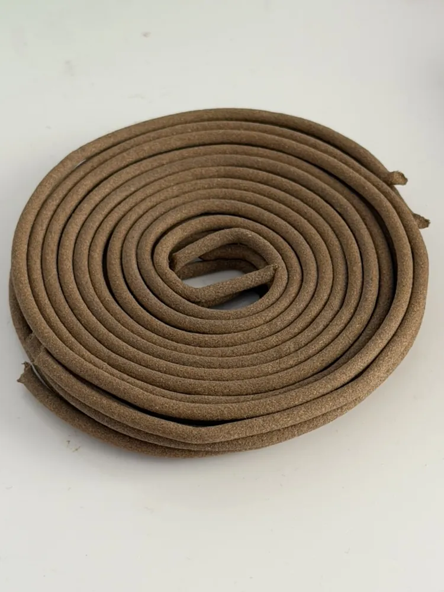
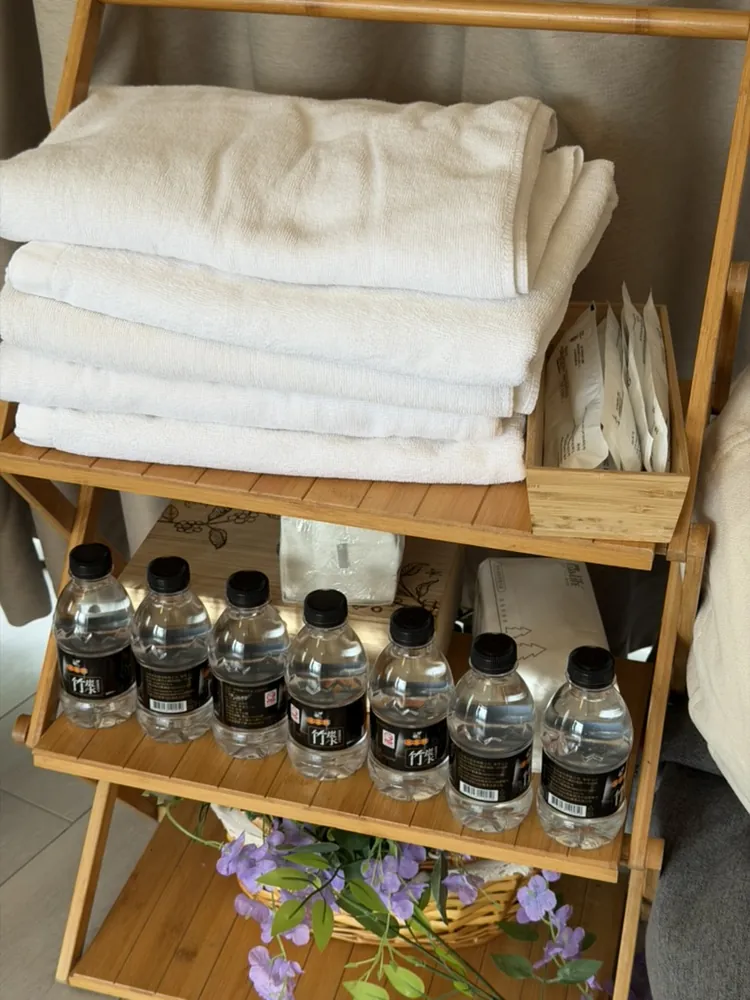
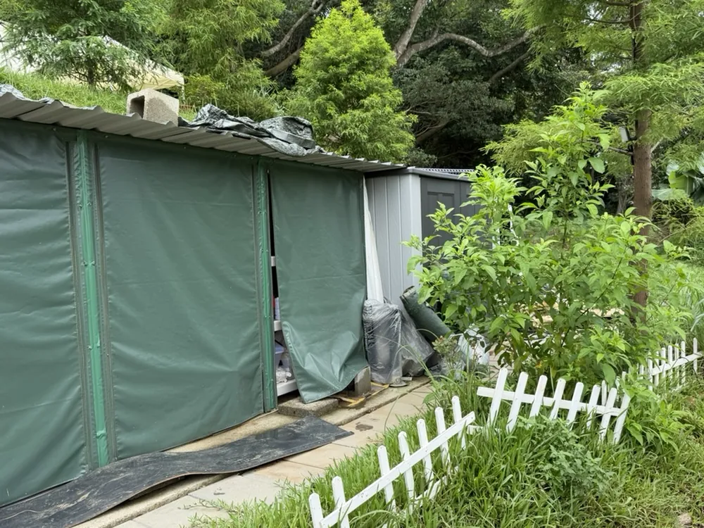
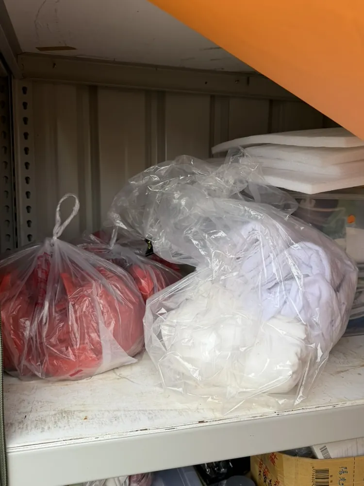

01
目前標準
美式烤肉爐、烤網與餐具去油
先噴、等待約 5 分鐘，再回來處理。
等待期間可先做其他整理，讓去油劑有時間作用。
- 在美式烤肉爐、烤網、鍋子與需要去油的餐具表面，均勻噴上 Costco 購買的強力去油清潔劑。
- 先離開處理其他工作，約 5 分鐘後再回來清洗。
- 美式烤肉爐主體大部分位置可直接用水管沖洗，確認油污與清潔劑都已沖乾淨。
- 烤網要取下來另外刷洗；有燒焦或卡垢的位置，用鐵刷加強刷除，再以清水沖淨。
- 鍋子、碗盤與餐具照正常方式刷洗並沖淨，不可留下油膜或清潔劑。
注意：清潔劑請依瓶身標示使用，不要與其他清潔劑混合。


02
每次都要確認
雲朵房與熱氣球房信箱備品

- 每個房型信箱各放兩罐瓦斯罐。
- 信箱鑰匙放回該信箱內的固定位置。
- 同步確認該房型的卡式爐已放回指定位置。
- 關上信箱前，再對照一次數量與鑰匙。
03
目前正確標準
蚊香與防蚊用品



- 使用照片中的棕色盤香。
- 將蚊香平放在白色吊掛式蚊香盒內。
- 確認蚊香點燃後，再蓋回上蓋並吊回指定的戶外位置。
- 吊掛時確認周圍沒有易燃物，也不會被客人碰撞。
- 更換或整理前先確認火已完全熄滅，清除灰燼後再放入新蚊香。
04
飲水方式已更新
浴巾、盥洗備品與飲水

- 浴巾折整齊、同方向堆放。
- 盥洗備品集中放入木盒，包裝朝向一致。
- 照片中的瓶裝水是舊配置。目前改用飲水機，不需要照照片補瓶裝水。
05
目前正確標準
床鋪與棉被整理方式

- 棉被攤開並完整平鋪，不再折放在床面上。
- 棉被四周拉順，床面盡量平整。
- 枕頭靠床頭排列，方向一致。
- 同一房間內每張床都使用相同整理方式。
06
流程可能再更新
髒寢具與替換用品的倉庫收納


目前已增加洗衣機，處理方式與以前不同。
換下來的髒棉被、床單與浴巾，先依現場最新洗衣流程處理；需要等待或暫放時才集中到綠色倉庫。這一段之後可再依新流程更新。